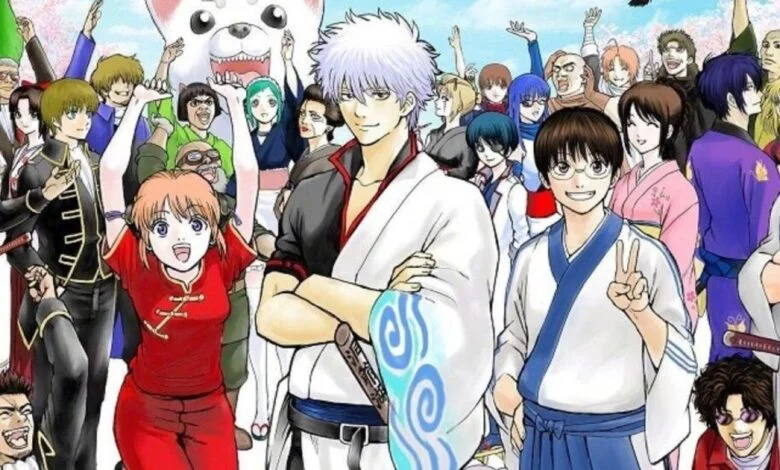
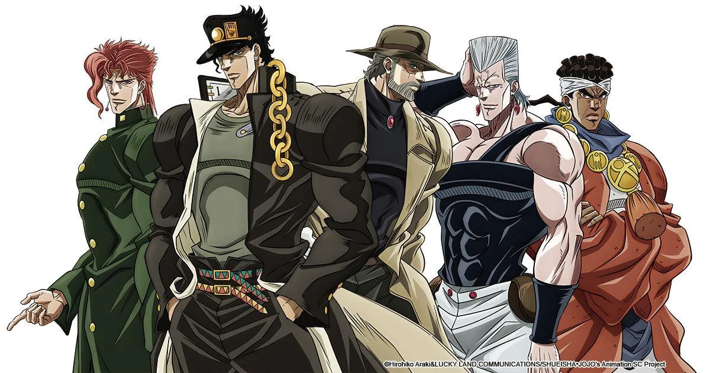
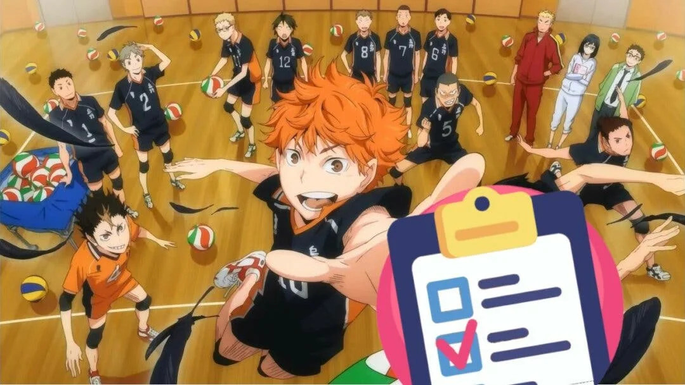
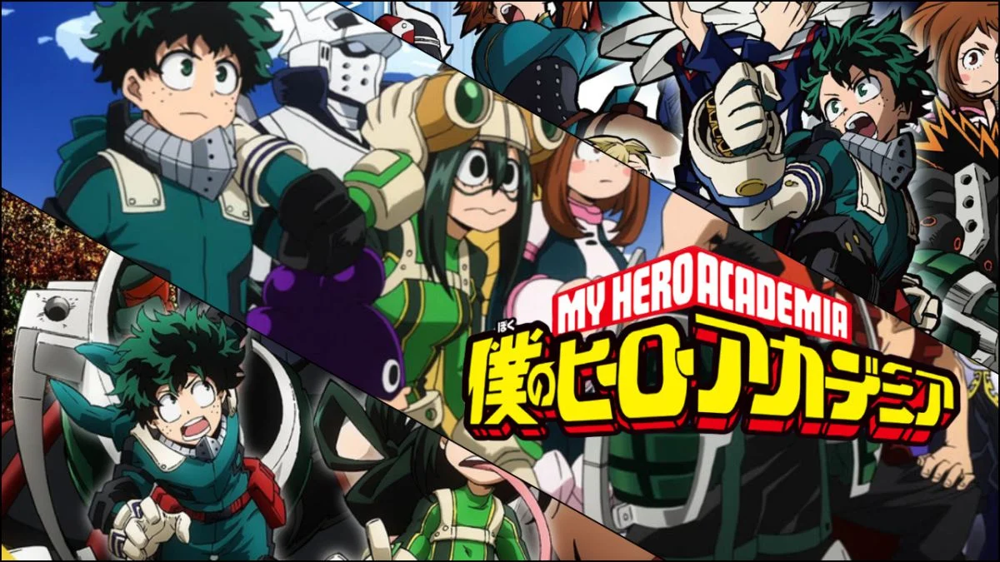
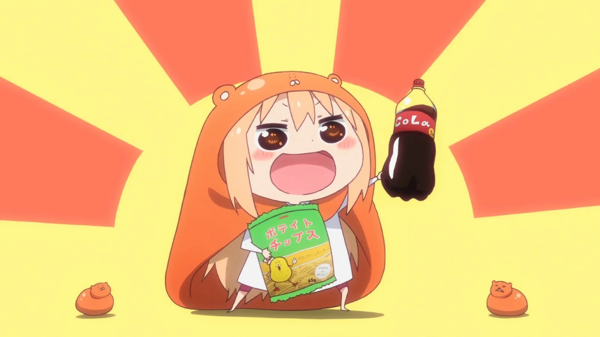
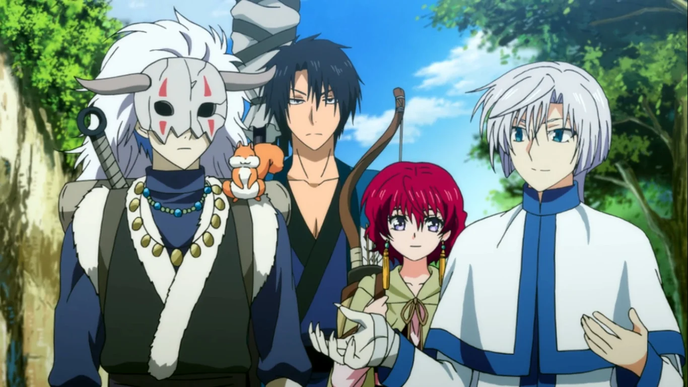

Listamos algunos de los animes que han sido más populares durante los últimos años dentro de su género, ya sea por su calidad o cantidad de fans
Seguir el ritmo temporada tras temporada a todos los animes que se emiten desde Japón es una misión que requiere cientos y cientos de horas. Semanalmente encontramos en la parrilla nipona no solo episodios de las series longevas más conocidas como One Piece o Boruto, sino también con muchísimos proyectos de diferentes calibres que compiten por llamar la atención y la asiduidad del espectador. Si eres de aquellos que rebuscan concienzudamente en las listas de mejores animes antes de empezar a ver cualquiera de ellos, te traemos algunos de los más populares que han empezado a emitir en los últimos años. Ya sea por su calidad o por haber conseguido un fandom ruidoso, entre las series de esta lista se encuentran las obras más populares de la última década, excluyendo las obras magnánimas más conocidas. Puede que haya llegado el momento de darle una oportunidad a aquel anime del que tanto oíste hablar pero que nunca comenzaste a ver.
Gintama
En un Japón feudal del futuro invadido por alienígenas y donde se ha prohibido la profesión de samurai, encontramos a los miembros de la Yorozuya: un exsamurai, una yato y un chico con gafas. Este anime, que tiene su origen en un popular manga publicado en la Shonen Jump, mezcla el humor con el drama de forma magistral, dando lugar a algunos de los momentos más hilarantes, memorables surrealistas y épicos de la industria. Con un total de 367 episodios (unos más animados que otros), Gintama ofrece cientos de horas de diversión y un plantel de personajes de lo más variados que se han ganado un hueco en el corazón de muchísimos aficionados.
Yuri!!! on ice
El panorama del manganime se revolucionó en 2016 con el estrenó esta serie de patinadores. En parte fue gracias a su preciosa animación, la cual por desgracia se fue descuidando con el paso de los episodios hasta acabar siendo motivo de mofa dento del fandom. Pero gran parte de su encanto residía en sus personajes y las interacciones entre los mismos, y eso se mantuvo hasta su último episodio. En Yuri!!! On Ice podrás seguir la historia de diferentes patinadores sobre hielo que compiten entre ellos, se conocen, forman lazos y evolucionan.

Jujutsu Kaisen
Es el shonen que está causando furor desde su en la temporada de invierno de 2020. Una serie con un ritmo increíble, unos personajes que derrochan carisma por cada píxel y una trama que combina el humor con los combates contra maldiciones de una forma magnífica. Además, su animación acompaña el ritmo de la trama, haciendo que ver esta serie sea una experiencia de lo más satisfactoria. Todavía está en emisión, y su primera temporada finalizará cuando alcance los 24 episodios.

Kimetsu no Yaiba (Demon Slayer)
Si tuviste conexión a internet durante 2019 es probable que te hayas cruzado con más de una foto de un chico con cabeza de jabalí o de una niña con una especie de bambú en la boca. Demon Slayer fue uno de los shonen más populares de 2019 con diferencia. Una historia repleta de acción y batallas que se concentran en tan solo 26 episodios y que supuso la puerta de entrada al género para muchas personas que, hasta aquel momento, no se habían animado a consumir este tipo de series japonesas.

Jojo´s Bizarre Adventure
Uno de los mangas más aclamados de la Shonen Jump desde 1986 llegó a la pequeña pantalla en 2012 con la adaptación animada de su primer arco. Respetando el característico estilo de dibujo y uso del color de su mangaka, Hirohiko Araki, esta serie ya ha adaptado los cinco primeros arcos del manga en un total de 152 episodios. Su popularidad ha crecido mucho en los últimos años más allá de las fronteras niponas, volviendo mucho de sus momentos en, prácticamente, parte de la cultura popular. Como todo shonen largo, tiene momentos en los que la agilidad de la trama disminuye, pero si somos capaces de pasarlo por alto tendremos por delante decenas de horas repletas de acción y calidad.
Shingeki no Kyojin (Attack on Titan)
El manga post apocalíptico de titanes tuvo su adaptación a la televisión en 2013 con la primera temporada de Attack on Titan. Ocho años después, estamos viviendo la emisión de su cuarta y última temporada, descubriendo todos los secretos y entramados políticos donde los titanes no están siendo el enemigo más aterrador. Es una serie que ha tenido en vilo a sus fans durante años, con una narrativa adictiva y una duración que le va como anillo al dedo.

Hunter x Hunter
A pesar de que tanto el manga como su versión animada lleven más de un año detenidos, Hunter x Hunter sigue siendo una serie digna de mención. Es un shonen que recuerda conscientemente a aventuras JRPG como Dragon Quest y cuyos personajes tienen un fondo tan noble que son capaces de ganarse un hueco en el corazón de cualquier espectador. Os avisamos de que después de los 148 episodios que tiene la serie, la historia todavía no está concluida y tampoco podréis encontrar su desenlace en el manga homónimo. Sin embargo, vale la pena cada uno de sus minutos, ya que todos y cada uno de sus personajes desprenden un calor único e inolvidable.

Haikyuu!!
Aunque a primera vista los partidos de volleyball entre estudiantes de secundaria no parezcan el evento más apasionante sobre el que hacer una serie, Haikyuu es una travesía increíble. Con una animación y una banda sonora exquisita, acompañar a los jugadores del Karasuno es una delicia audiovisual que puede llegar a despertar el interés en el deporte hasta en los más reticentes. Gracias a ello, se han ganado el cariño de multitud de fans creando una gran comunidad a su alrededor.
Shigatsu wa kimi no uso (Your Lie in April)
Este popular anime de historias de vida se ganó el corazón de muchos espectadores gracias a su entrañable y lacrimógena historia. Su trama gira alrededor de dos estudiantes de secundaria unidos por su pasión por la música. Con su piano y su violín, dan vida a la inolvidable banda sonora del anime, que combinado con su mimada animación hacen de sus 22 capítulos un viaje inolvidable.

Saga Monogatari
Las diferentes temporadas de Monogatari conforman una serie que es complicada de explicar. Es una obra audiovisual densa, repleta de momentos bizarros y escenas muy peculiares. Destaca ante todo su apartado estético, el diseño de personajes y su increíble animación. Eso sí, os recomendamos verla poco a poco y no consumirla de golpe para poder apreciar cada minuto de metraje completamente.

Boku no hero (My Hero Academia)
Si ha habido una serie anime que en los últimos años ha creado una comunidad de fans que destaca por su tamaño es Boku no Hero. En 2019 se emitió la primera temporada del shonen que, por la popularidad del manga en el que estaba basado, prometía ser sucesor de las grandes sagas que estaban llegando a su fin como Naruto y One Piece. Y, en términos de popularidad, así ha sido. Los fans están esperando la quinta temporada del anime mientras el manga que trata de una sociedad en la que ser un héroe es un trabajo tan común como ser bombero sigue en emisión. Es una obra muy coral, plagada de aventuras y de personajes carismáticos.
Dragon Ball
Una apuesta segura para los que, cuando la situación lo requirió, mandaron todas sus fuerzas a Goku para salvar el planeta. Ambientado en un planeta Tierra siete años después de los acontecimientos de Dragon Ball Z, los 131 episodios de esta temorada nos permiten seguir los pasos del elenco clásico con algunos personajes nuevos. Aquellos que ya se ganaron un hueco en nuestros corazones y en el imaginario de la cultura pop regresan a la pequeña pantalla para darnos más fusiones, batallas y momentos épicos.

Banana Fish
Un tímido chico japonés acaba sumido en una grave encrucijada de la mafia de Nueva York debido a su nueva amistad con Ash. Siendo dos polos opuestos, Eji y Ash tendrán que desafiar a todo un entramado de personajes poderosos para salir airosos de la situación durante los 24 episodios en los que se condensan sus andanzas. Un anime recomendado especialmente para los que busquen una historia más occidental, con una trama tensa que te mantiene todo el rato al borde del sofá.

Puella Magi Madoka Magica
Aunque a primera vista pueda parecer una serie de chicas mágicas normal y corriente, Madoka Magica revolucionó el género replanteando sus cimientos y sus tropos más desgastados. Es una historia más dura de lo que se puede vaticinar tras ver los primeros episodios, con una gama de grises amargos que sorprende con un final inolvidable. Con tan solo doce episodios, una buena elección para pasar un fin de semana pegado a la pantalla.

Himouto!! Umaru-chan
Para los que busquen pasar un buen rato, Umaru-chan es la opción idónea. Con capítulos autoconclusivos y dinámicos, Umaru proporciona horas de comedia a la vez que sus personajes se hacen, poco a poco, un hueco en nuestro corazón. Su nombre viene de Umaru, su protagonista. A primera vista parece una chica de secundaria perfecta, con un historial intachable y unas notas impecables. Sin embargo, descubrimos que al llegar a casa encoje a tamaño chibi y lo único que hace que deje de jugar a Monster Hunter es que empiece la emisión de su anime favorito.
Osomatsu-san
En la misma línea que el anterior, Osomatsu-san es un anime cómico que se emitió en 2015. Se basa en los sextillizos que protagonizaban Osomatsu-kun, la serie infantil de corte cómico de los años 60. En la versión moderna los hermanos han crecdo y, cada uno con su personalidad y rasgos distintivos, son un dolor de cabeza para sus padres. Sin trabajo y sin estudios, la serie muestra como tratan de vivir la vida y, de vez en cuando, ganar algo de dinero, dando lugar a un sinfín de momentos desternillantes. Es una serie ligera y una de las mejores opciones si te gusta el humor con un toque amargo.

Akatsuki no Yona
Quizás sea una de las series menos conocida de la lista, pero tiene un fiel séquito de seguidores. Es un anime de corte histórico, lleno de magia y guerreros, con una protagonista fuerte y un elenco con grandes arcos de personaje. En sus 24 episoios no concluye la totalidad de la trama, ya que el manga en el que se basa continúa en publicación, pero es una buena forma de disfrutar del inicio de la historia i, incluso, de iniciarse en ella para luego continuar con la versión sobre papel.
Kakegurui
La trama de esta serie es surrealista pero tremendamente adictiva. Con un ritmo trepidante, nos cuenta el funcionamiento de una escuela privada en la que el destino de las alumnas se decide mediante apuestas terroríficas y juegos de azar. En muchas ocasiones nos encontraremos tensos mientras se apuestan las uñas de los dedos o cosas similares. En cada capítulo viviremos un juego nuevo, con sus propias reglas y lagunas, lo que hará que encadenemos un episodio tras u otro sin darnos cuenta.

Zankyou no Terror (Terror in Resonance)
En los doce episodios en los que se concentra esta historia, Nine y Twelve llevan el existencialismo adolescente a su máximo exponente. Son dos terroristas que amenazan Tokio, y poco a poco iremos descubriendo su trasfondo y móviles mientras el gobierno trata de darles caza. Una historia concisa y emotiva, plagada de acción y momentos tensos, perfecta para hacer maratón un fin de semana.
")
Diamond no Ace
Quizás otra de las obras menos conocida de la lista, aunque sí muy aclamada por todos aquellos que la han visto. Es un anime de deporte que sigue los pasos del grupo de beisbol de un instituto japonés. Los veremos crecer, mejorar, aprender y evolucionar tanto fuera como dentro del campo, viviendo con ellos sus victorias y fracasos. Se espera que en 2022 se emita la cuarta temporada, mientras que las tres anteriores suman un total de 178 episodios.

| Generos | Animes |
|---|---|
| Shonen |
|
| Deportes |
|
Diccionario
- Samurai
- En la antigua sociedad feudal japonesa, entre los siglos XII y XIX, individuo que pertenecía a una clase inferior de la nobleza constituida por los militares que estaban al servicio de un shogun o señor feudal
- Shonen Jump
- Es una revista antológica semanal de manga orientado a una demografía shōnen, publicada por la editorial Shūeisha como parte de la línea de revistas Jump.